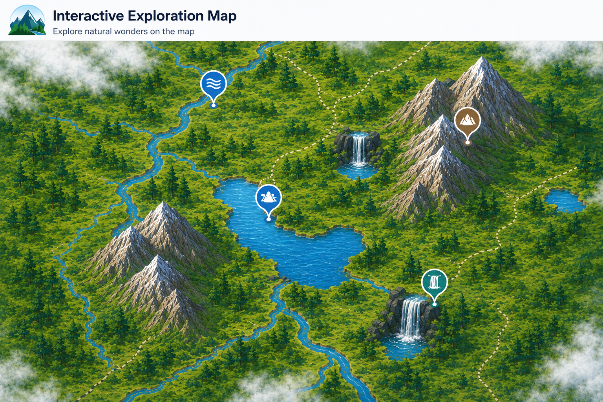

Click the markers to explore natural features.

Rivers are flowing bodies of water that support travel, farming, trade, and settlements.
Lakes are large inland bodies of water that provide freshwater, food, and transportation routes.
Mountains are elevated landforms that often act as landmarks and influence climate and settlement patterns.
Waterfalls form when water flows over a steep drop and are important natural landmarks.